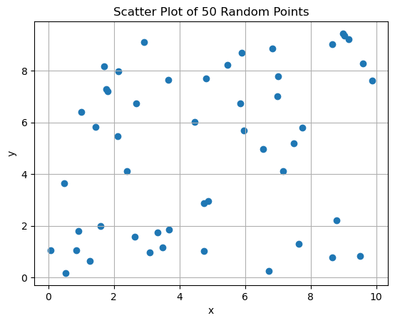

MatPlotlib
Exercise 1:
Create a simple line plot for y = x for x values ranging from 0 to 10.
Exercise 2:
Plot y = x^2 using Matplotlib for x values between -10 and 10.
Exercise 3:
Create a scatter plot with 50 random points where x and y values are between 0 and 10.
Exercise 4:
Plot a sine wave using Matplotlib for x values between 0 and 2π.
Exercise 5:
Create a bar chart for the following data: categories = ['A', 'B', 'C', 'D'] and values = [3, 7, 5, 9].
Exercise 6:
Create a histogram of 1000 random numbers generated from a normal distribution.
Exercise 7:
Plot two line plots on the same graph: y1 = x^2 and y2 = x^3 for x ranging from 0 to 10.
Exercise 8:
Add titles, axis labels, and a legend to the plot in Exercise 7.
Exercise 9:
Create a subplot with 2 rows and 1 column. Plot y1 = x^2 in the first subplot and y2 = x^3 in the second.
Exercise 10:
Use a different color and linestyle for each line in a plot of three functions: y1 = x, y2 = x^2, and y3 = x^3.
Exercise 11:
Create a pie chart with 5 segments labeled A, B, C, D, and E, with values [25, 35, 20, 15, 5].
Exercise 12:
Create a horizontal bar chart with categories = ['A', 'B', 'C', 'D'] and values = [3, 7, 5, 9].
Exercise 13:
Change the figure size of a line plot to 10x6 inches.
Exercise 14:
Plot a filled area under the curve of y = x^2 for x ranging from 0 to 10.
Exercise 15:
Change the style of the plot to ggplot and replot the sine wave from Exercise 4.
Exercise 16:
Create a stacked bar chart for the following data: Group A = [3, 5, 7], Group B = [2, 6, 4], and categories = ['X', 'Y', 'Z'].
Exercise 17:
Create a plot with multiple subplots in a 2x2 grid. Plot y1 = x, y2 = x^2, y3 = x^3, and y4 = x^4.
Exercise 18:
Create a heatmap using a 2D array of random values with shape (5, 5).
Exercise 19:
Add error bars to a bar plot with categories = ['A', 'B', 'C', 'D'] and values = [3, 7, 5, 9], assuming the error is 1 for each value.
Exercise 20:
Plot a sine wave using a dashed line and a cosine wave using a solid line on the same plot.
Exercise 21:
Plot a contour plot for the function z = sin(x) + cos(y) over a grid of x and y values ranging from -5 to 5.
Exercise 22:
Create a box plot for a dataset generated with 100 random numbers from a normal distribution.
Exercise 23:
Create a scatter plot with a color map applied to the points, where the color represents the value of the points.

Exercise 24:
Use Matplotlib to display an image from a file.
Exercise 25:
Create a plot with logarithmic scaling on both axes.
Exercise 26:
Create a 3D plot of the function z = x^2 + y^2 over a grid of x and y values.
Exercise 27:
Create a radar chart with 5 variables and random values between 0 and 1.
Exercise 28:
Create a violin plot to show the distribution of a dataset generated with 1000 random numbers from a normal distribution.
Exercise 29:
Create a bar chart with different colors for each bar.
Exercise 30:
Create a stem plot for the function y = sin(x) for x values between 0 and 2π.
Exercise 31:
Create a scatter plot with markers of different sizes.
Exercise 32:
Plot a cumulative histogram of 1000 random numbers generated from a uniform distribution.
Exercise 33:
Create a pie chart with custom colors for each segment.
Exercise 34:
Create a plot with twin y-axes where one axis represents y = x and the other represents y = x^2.
Exercise 35:
Plot a density plot of 1000 random values from a normal distribution.
Exercise 36:
Create a histogram and add a kernel density estimate (KDE) to the plot.
Exercise 37:
Add gridlines to a line plot and change the color and linestyle of the grid.
Exercise 38:
Create a bar chart with annotations showing the height of each bar above the bar.
Exercise 39:
Create a filled contour plot for the function z = x^2 + y^2 over a grid of x and y values.
Exercise 40:
Create a stacked area plot using three random datasets.
Exercise 41:
Create a bar chart with error bars, where the error values are proportional to the bar values.
Exercise 42:
Create a wind rose chart using random wind direction and speed data.
Exercise 43:
Plot a cumulative frequency curve for a dataset of 100 random numbers.
Exercise 44:
Create a waterfall chart using Matplotlib to show the changes in a sequence of values.
Exercise 45:
Use the imshow function to display a 10x10 matrix of random values as an image.
Exercise 46:
Create a line plot with different markers for each point.
Exercise 47:
Create a time series plot using Matplotlib and plot random data over a range of dates.
Exercise 48:
Create a bar chart with bars colored by category.
Exercise 49:
Create a radar chart to visualize the strengths of five different attributes.
Exercise 50:
Create a 3D scatter plot with random values for x, y, and z.